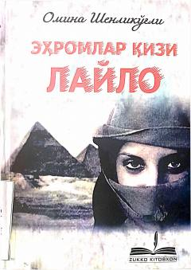

EQVatan va e'tiqod muhofazasiga bag'ishlangan ta'sirli qissa.
Ushbu asar o'z vatani va e'tiqodi uchun kurashgan insonlarning taqdiri haqida hikoya qiladi. Kitobda din, nomus va vatan tushunchalarining muhimligi hamda ular uchun jon fido qilish mavzulari yoritilgan. Muallif o'quvchilarni o'z Vatanini sevishga va uning qadriga yetishga chorlaydi.